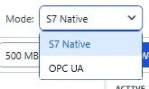
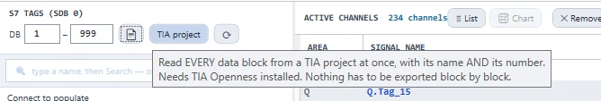
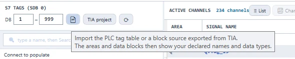
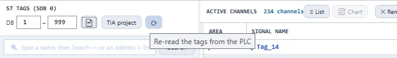
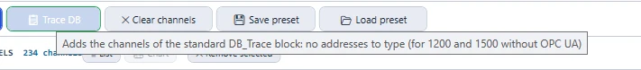
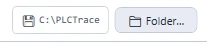
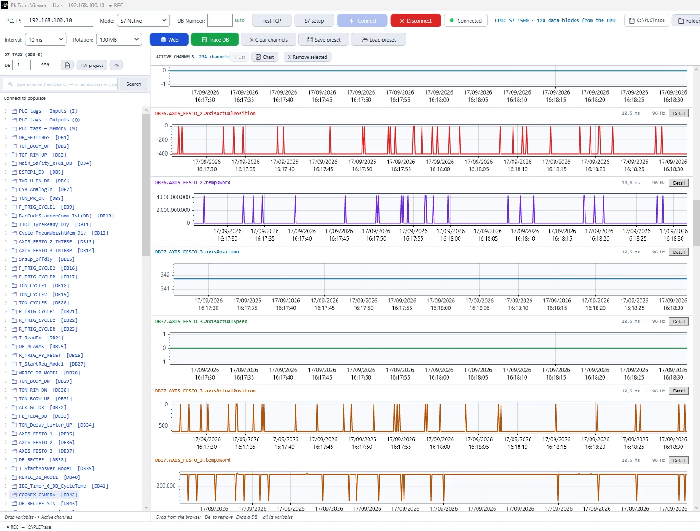
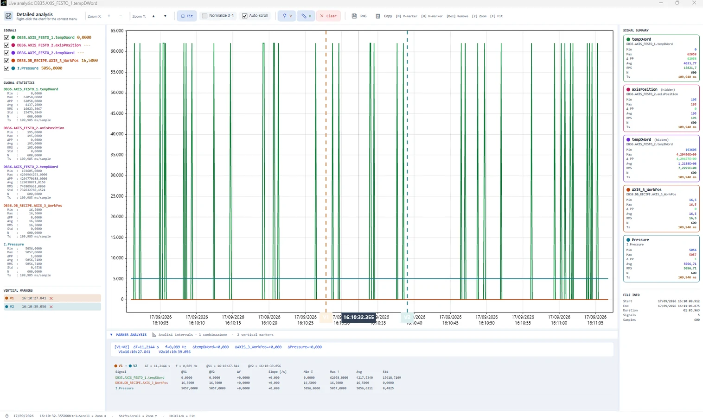
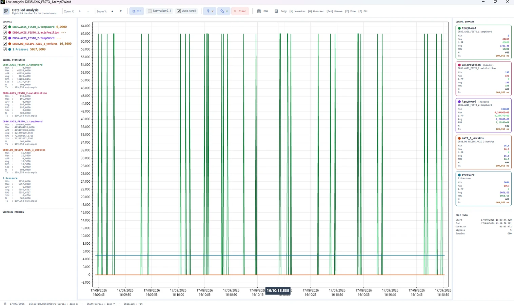

Dieci passi, nell'ordine in cui si fanno in impianto. Il primo vale anche per la versione Free; dal secondo serve la licenza PRO, perché collegamento al PLC e registrazione sono funzioni PRO. Nel programma il tasto F1 apre il manuale all'argomento della finestra in cui ti trovi.
Ten steps, in the order you do them on site. The first also applies to the Free version; from the second you need a PRO licence, because connecting to the PLC and recording are PRO features. In the program, F1 opens the manual at the topic of the window you are in.
Prima di partire.Before you start. Servono l'indirizzo IP della CPU e un cavo di rete. You need the CPU's IP address and a network cable.
1. Installazione
1. Installation
Scarica PlcTraceViewer_Setup_v2.1.2.exe e avvialo. Se Windows SmartScreen segnala che l'editore non è riconosciuto, scegli Ulteriori informazioni → Esegui comunque: il file di installazione non è firmato con un certificato commerciale e si scarica dalla pagina delle release su GitHub.
Download PlcTraceViewer_Setup_v2.1.2.exe and run it. If Windows SmartScreen reports that the publisher is not recognised, choose More info → Run anyway: the installer is not signed with a commercial certificate and is downloaded from the GitHub releases page.
Il runtime è incluso nell'installazione. Se scegli di installare la dashboard web, il servizio viene registrato e avviato automaticamente. Per un aggiornamento, chiudi prima la versione precedente.
The runtime is included in the installer. If you choose to install the web dashboard, its service is registered and started automatically. When updating, close the previous version first.
2. Collegamento alla CPU PRO
2. Connecting to the CPU PRO
Da qui in poi serve la licenza PRO. La versione Free apre e analizza le registrazioni esistenti, ma non acquisisce e non registra.From here on you need a PRO licence. The Free version opens and analyses existing recordings, but does not acquire or record.
Apri la finestra Live, inserisci l'indirizzo IP della CPU e scegli il tipo di collegamento. S7 Native comprende PUT/GET e, sulle CPU recenti, S7comm-Plus; OPC UA è l'alternativa che legge per nome quando il server OPC UA è attivo sulla CPU.
Open the Live window, enter the CPU's IP address and choose the connection type. S7 Native covers PUT/GET and, on recent CPUs, S7comm-Plus; OPC UA is the alternative that reads by name when the OPC UA server is enabled on the CPU.

Prima di premere Connect, usa Test TCP per verificare che la porta 102 sia raggiungibile. Il test approfondito invia anche una richiesta di connessione ISO-on-TCP: rileva rack e slot errati e i tunnel che inoltrano la porta 102 senza che dall'altra parte ci sia una CPU S7.
Before pressing Connect, use Test TCP to check that port 102 is reachable. The deep test also sends an ISO-on-TCP connection request: it detects wrong rack and slot settings and tunnels that forward port 102 without an S7 CPU on the other side.
Slot 1 per S7-1500 e S7-1200, slot 2 per S7-300, slot 3 per S7-400. Rack 0 per tutte.Slot 1 for S7-1500 and S7-1200, slot 2 for S7-300, slot 3 for S7-400. Rack 0 for all.
Con VPN o collegamento remoto:With a VPN or a remote link:aumenta i timeout. Un timeout indica un problema di tempi o di percorso di rete, non un modello di CPU sbagliato; il programma non prova altre famiglie di CPU.increase the timeouts. A timeout means a timing or network-path problem, not a wrong CPU model; the program does not try other CPU families.
3. Nomi dei segnali
3. Signal names
Un indirizzo come DB38.DBD64 non dice nulla a chi apre il file dopo qualche mese. I nomi si possono ottenere in quattro modi, anche combinati.
An address such as DB38.DBD64 means nothing to whoever opens the file a few months later. Names can be obtained in four ways, which can also be combined.
a) Dal progetto TIA
a) From the TIA project

b) Da una tabella dei tag
b) From a tag table

c) Dalla CPU
c) From the CPU

d) Dal blocco DB_Trace
d) From the DB_Trace block

Su S7-1200 e S7-1500 l'elenco e la struttura dei blocchi si leggono dalla CPU anche senza il progetto. È il modo più rapido quando sei in impianto e non hai il progetto a disposizione.
On S7-1200 and S7-1500 the block list and structure are read from the CPU even without the project. It is the quickest way when you are on site without the project.
4. Scelta dei canali
4. Choosing the channels
Nell'albero a sinistra ci sono ingressi, uscite, merker e tutti i blocchi dati. Trascina una variabile nell'elenco dei canali attivi; trascinando un intero DB si aggiungono tutte le sue variabili.
The tree on the left holds inputs, outputs, memory bits and all data blocks. Drag a variable into the active-channel list; dragging a whole DB adds all of its variables.
Con Save preset salvi l'elenco e la volta successiva lo ricarichi subito. Del rimuove i canali selezionati.
Save preset saves the list so you can load it again next time. Del removes the selected channels.
5. Intervallo di campionamento
5. Sampling interval
Scegli l'intervallo, da 1 ms a 5 s, e la dimensione alla quale i file ruotano. Il pannello ACQUISITION mostra frequenza e periodo reali, numero di campioni acquisiti e numero di canali che rispondono.
Choose the interval, from 1 ms to 5 s, and the size at which files rotate. The ACQUISITION panel shows the real rate and period, the number of samples acquired and the number of channels that answer.
Se la CPU, con quei canali, non riesce a mantenere l'intervallo richiesto, il programma lo segnala prima di aprire il primo file e propone l'intervallo raggiungibile:
If the CPU, with those channels, cannot keep the requested interval, the program reports it before the first file is opened and suggests the interval that can be reached:
Accanto a ogni canale ci sono PERIOD e RATE: il periodo con cui il canale viene effettivamente letto e la frequenza corrispondente. Un rallentamento si vede qui.Next to each channel are PERIOD and RATE: the period at which the channel is actually read and the matching rate. A slowdown shows up here.
6. Registrazione
6. Recording
Scegli la cartella di destinazione e premi START REC. Ogni campione viene salvato con l'istante in cui è stato letto; i valori non letti restano mancanti e non vengono sostituiti con zero.
Choose the destination folder and press START REC. Each sample is saved with the time it was read; values that were not read stay missing and are not replaced with zero.


I grafici si possono consultare mentre il file viene scritto.The charts can be viewed while the file is being written.
I file sono raccolti in una cartella per giorno e ruotano alla dimensione impostata. I file più vecchi vengono compressi e poi eliminati secondo il periodo di conservazione; il file in scrittura non viene mai toccato. La registrazione può durare tutta la notte: la scrittura è controllata e un'interruzione viene segnalata subito nel registro.
Files are collected in one folder per day and rotate at the size you set. The oldest files are compressed and then deleted according to the retention period; the file being written is never touched. A recording can run all night: writing is monitored and an interruption is reported immediately in the log.
7. Analisi, anche durante la registrazione
7. Analysis, also during recording
Con un doppio clic su un canale si apre la finestra di analisi, che continua a ricevere il segnale. Gli altri canali si trascinano nella finestra per sovrapporli sullo stesso asse dei tempi.
Double-click a channel to open the analysis window, which keeps receiving the signal. Drag other channels into the window to overlay them on the same time axis.

Posiziona due marker verticali (M) e uno o più marker orizzontali (H): la tabella sotto il grafico calcola ΔT, la frequenza corrispondente e la differenza di ogni segnale tra i due marker. La tabella si può copiare in un rapporto.
Place two vertical markers (M) and one or more horizontal markers (H): the table below the chart calculates ΔT, the matching frequency and each signal's difference between the two markers. The table can be copied into a report.

Statistiche del tratto selezionato e dell'intero segnale, sempre accanto al grafico.Statistics of the selected span and of the whole signal, always next to the chart.
Da qui si esportano in CSV solo i canali e il tratto necessari, oppure l'immagine del grafico (entrambe funzioni PRO). Se un canale deve essere una formula invece di un indirizzo, ad esempio una derivata, un filtro o un valore efficace, l'editor delle espressioni mostra la curva mentre la scrivi.
From here you export only the channels and the span you need as CSV, or the chart as an image (both PRO features). If a channel should be a formula instead of an address, for example a derivative, a filter or an RMS value, the expression editor shows the curve as you write it.
8. Dashboard web (PRO)
8. Web dashboard (PRO)
Il pulsante Web apre la pagina; il servizio è già attivo in background sulla porta 8085. Da qualsiasi PC della rete di impianto si vedono i valori correnti e si comanda la registrazione dell'applicazione, non una copia. La pagina non ha autenticazione: usala solo su una rete di impianto protetta.
The Web button opens the page; the service is already running in the background on port 8085. From any PC on the plant network you see the current values and control the recording of the application, not a copy. The page has no authentication: use it only on a protected plant network.
9. Campionamento a 1 ms nel PLC
9. 1 ms sampling in the PLC
Se la CPU non risponde abbastanza in fretta per l'intervallo necessario, il campionamento si può spostare nel PLC. Con Trace DB → Export il programma genera tre file (DB_TraceHS.db, FC_TraceSampler.scl, FC_TraceMap.scl) da importare in TIA come sorgenti esterne.
If the CPU does not answer fast enough for the interval you need, sampling can be moved into the PLC. With Trace DB → Export the program generates three files (DB_TraceHS.db, FC_TraceSampler.scl, FC_TraceMap.scl) to import into TIA as external sources.
Scegli quanti segnali per tipo e la profondità del buffer, lasciando qualche posizione libera: per aggiungere un segnale in seguito basta una riga in FC_TraceMap, senza esportare di nuovo. Il blocco DB_TraceHS deve restare non ottimizzato, con PUT/GET abilitato; FC_TraceMap e FC_TraceSampler si richiamano da un OB di interrupt ciclico a 1000 µs.
Choose how many signals of each type and the buffer depth, leaving a few positions free: to add a signal later, one line in FC_TraceMap is enough, without exporting again. The DB_TraceHS block must stay non-optimised, with PUT/GET enabled; FC_TraceMap and FC_TraceSampler are called from a cyclic interrupt OB at 1000 µs.
I blocchi sono nuovi: quelli esistenti non vengono modificati e nessun DB in uso viene reinizializzato. Il caricamento si può fare in RUN.The blocks are new: existing blocks are not modified and no DB in use is reinitialised. They can be downloaded in RUN.
10. Risoluzione dei problemi
10. Troubleshooting
Sintomo
Causa più frequente
Symptom
Most frequent cause
Timeout durante il collegamento
Rete o instradamento, non il modello di CPU: prova Test TCP e poi il test approfondito. Con una VPN aumenta i timeout.
Timeout while connecting
Network or routing, not the CPU model: try Test TCP and then the deep test. With a VPN, increase the timeouts.
La connessione viene rifiutata subito
Rack o slot errati, oppure l'accesso PUT/GET non è abilitato nella configurazione della CPU.
The connection is refused immediately
Wrong rack or slot, or PUT/GET access is not enabled in the CPU configuration.
Un DB non si legge per indirizzo
È un DB ad accesso ottimizzato e non ha indirizzi assoluti. Serve OPC UA o S7comm-Plus.
A DB cannot be read by address
It is a DB with optimised access and has no absolute addresses. OPC UA or S7comm-Plus is needed.
«1 ms does not fit — use 10 ms»
Con quei canali la CPU non risponde abbastanza in fretta. Riduci i canali, accetta l'intervallo proposto o sposta il campionamento nel PLC (passo 9).
“1 ms does not fit — use 10 ms”
With those channels the CPU does not answer fast enough. Reduce the channels, accept the suggested interval or move sampling into the PLC (step 9).
Il periodo di un canale aumenta
Controlla la colonna PERIOD: a rallentare è la CPU o la rete, non l'interfaccia, perché l'acquisizione gira in un processo separato.
A channel's period increases
Check the PERIOD column: it is the CPU or the network that is slowing down, not the user interface, because acquisition runs in a separate process.
La dashboard web non si apre
È una funzione PRO e il servizio deve essere attivo; verifica che la porta 8085 non sia occupata o bloccata dal firewall.
The web dashboard does not open
It is a PRO feature and the service must be running; check that port 8085 is not in use or blocked by the firewall.
Il manuale completo è incluso nel programma e si apre con F1.
The full manual is included in the program and opens with F1.